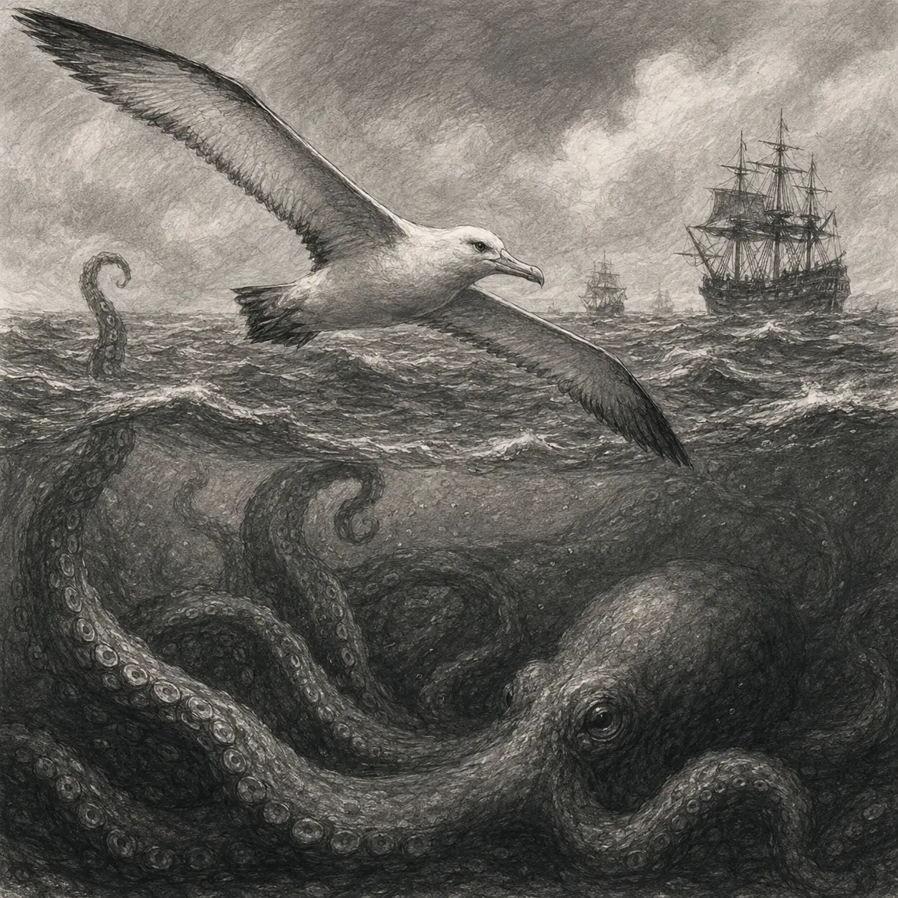

آلباتروس
سهیل آقایانی
اسم من آلباتروس هست. البته ممکنه خیلیها من رو به این نام نشناسن. بعضیها من رو قادوس هم ممکنه صدا کنن. در کل در طول سالیان مختلف اسمها مختلفی به من داده شده. اما این اسم آلباتروس بقدری بر ذهن من نشست که دیگر یادم نمییاد اسم پیشین من چه بود. همواره دریاها برای من یکسان و یک شکل بودهاند. اما احساسی به من میگوید که حتی دریاها هم کوچک شدهاند. من موجودی هستم که از گرما فراری هستم. همیشه سعی دارم در سرما سفر کنم. همیشه با شکارچیان نهنگ به سوی دریاها پرواز میکنم. به تازگی فهمیدم که وقتی من رو میبینن به عنوان نمادی از روح تموم دریانوردهایی که داخل آبهایی که هستن میبینن. مسخره نیست؟ یک پرنده نماد روح باشه. نمیدونم نماد بودن این ماجرا خندهدار هست و یا باور داشتن به چیزی مثل روح. اما هر چیزی هست تا زمانی که نخوان من رو شکار کنن هیچ ایرادی به کارهاشون نمیگیرم. البته بعضی وقتا از اینکه میبینم این انسانها در کمال وقاهت من رو دنبال میکنن. انگار هیچوقت چیزی به نام آزادگی به گوششان نخورده. من از اینکه پرندهی معروفی بین شکارچیان و مردم اسکله باشم خوشم میام. بخصوص که بعضی وقتا بر این زمین کثیفی که این موجودات ساختهاند مینشینم و بچهها از چشمهاشون مراقبت میکنن چون فکر میکنن اونها انقدر ارزش دارن که بخوام بهشون حمله کنم. اونم چی؟ بخوام گوشت کثیفشون رو به منقار بکشم. اما این داستان درباره این که من چه احساسی درباره انسانها دارم. چون میخوام شما رو با خودم در مسیر زندگیم همراه کنم. چون مطمئنا کسی رو میبینید که طرفدارش هستید. کرانکن. جالبی کار این هست که من کسی رو نکشتم، البته ممکنه به سمت آغوش مرگ هدایت کرده باشم. اما مستقیما کسی رو نکشتم. بعد تبدیل به شخصیتی شدم که همه ازش فرارین. از طرفی کراکن کسی هست که من میبینم آدمها رو غرق میکنه. با اینها آدمها انقدر احمق هستند که عزیزانشون رو میفرستن که کرانکن اونها رو به آغوش بکشه. شاید فکر میکنن میتونن از این طریق کرانکن رو سمت خودشون نگه دارن تا به ساحلهای کثیفشون حمله نکنه. اما نمیدونن این من هستن که کرانکن رو همینجا نگه داشتم. این من هستم که به کرانکن گفتم این انسانها موجودات کاملا احساسی و عاشق به آغوش کشیدهشدن هستن. موجوداتی هستن که همیشه بدنت رو تحسین میکنن و براشون عزیزی. فکر نکنم من آدم شروری باشم اما شاید بهتر باشه کمی به عقب بریم که چطوری اصلا با کرانکن آشنا شدم. البته خودتون میدونید. من از تک تک شماها بدم میام. پس اصلا چه دلیلی داره براتون از این بگم چطوری با کرانکن آشنا شدم. هر وقت من رو دیدید و بهم غذا رو جلوم گذاشتید تا اینکه بخوایید سمت پرت کنید داستانش رو تعریف میکنم.